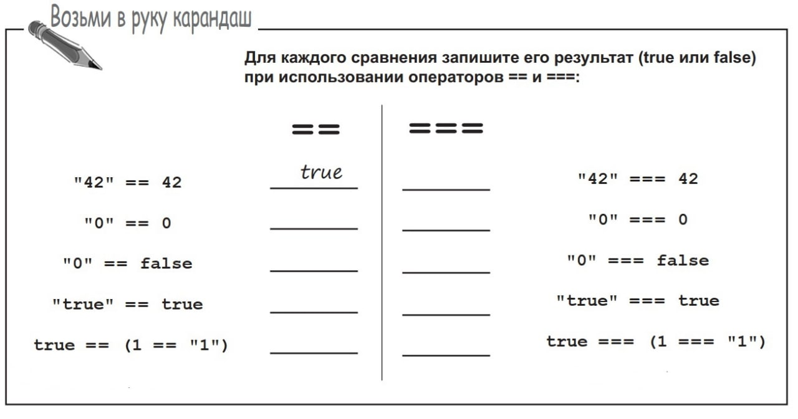
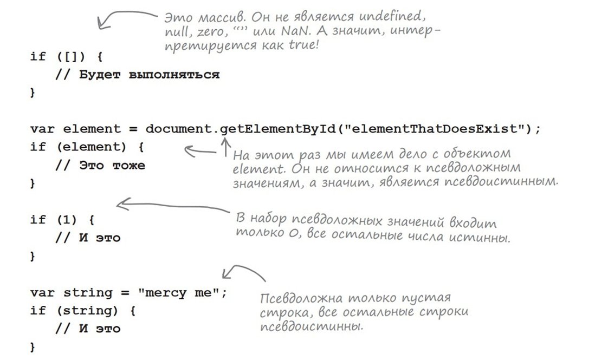
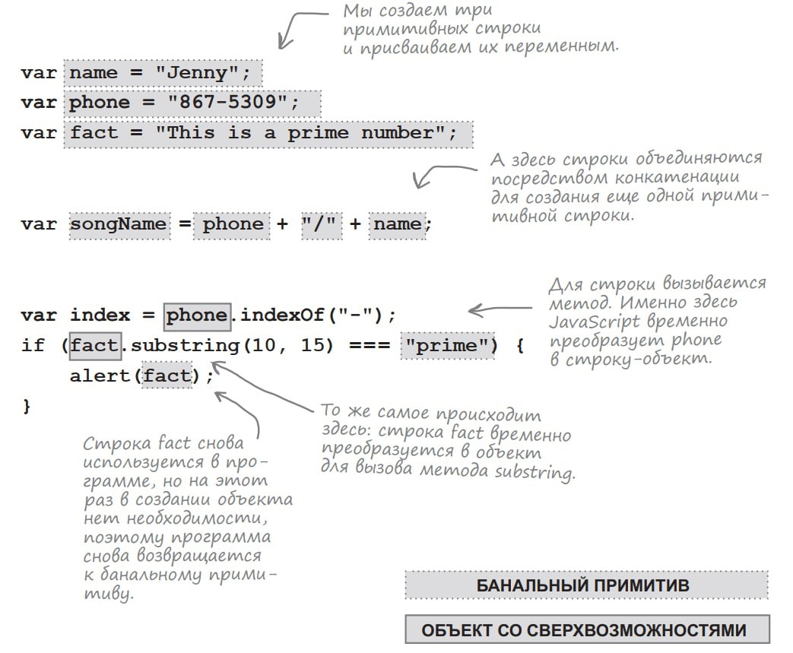
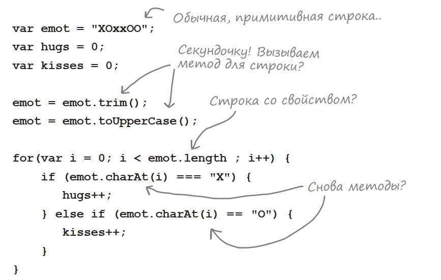
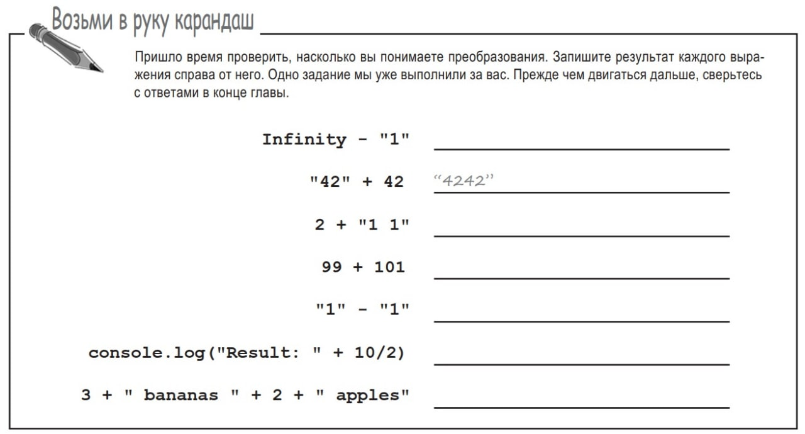

Головна > Тема 14
Як ви вважаєте?
- Якого типу значення Infinity?
- Infinity - Infinity = ?
- Якого типу null?
- Що відбувається коли порівнюємо:
...
if("99" == 99) {
...
}
...
Порівняння значень
- Якщо обидва значення відносяться до одного типу ми просто порівнюємо їх.
- Значення відносяться до різних типів, ми перетворюємо їх до одного типу, а потім порівнюємо.
- Порівняння числа з рядком
99 == "99" // true
99 == 99 // true
99 == "vanilla" // false
99 == NaN // false - Порівняння булевого значення з іншим типом:
в цьому випадку булеве значення перетворюється в число і два числа порівнюються (true -> 1, false -> 0):1 == true // true
1 == 1 // true
"1" == true // true
"1" == 1 // true - Порівняння null з undefined.
Порівняння цих значень дає результат true:undefined == null // true
- Порівняння числа з рядком
Значення відносяться до різних типів, ми перетворюємо їх до одного типу, а потім порівнюємо.
1 == " "Строга рівність (===) (оператор тотожності)
Це означає, що якщо два значення відносяться до одного типу, ми переходимо до їх порівняння. Якщо ні — результат false.
99 == "ninety-nine" // false (правило 2а)true == "true" // false (правило 2б)99 <= "100" // true (правило 2а)Спробуйте виконати завдання на малюнку:
Щоб визначити результат порівняння "banana" < "mango", треба використати алфавітний порядок. Отже "banana" < "mango", так як "b" передує "m". А "mango" < "melon" тому, що перші букви співпадають, але друга буква "a" передує "e". В той же час "Mango" < "mango", бо в порядку символів Юнікода "M" іде раніше за "m".
Також існує оператор !== (строга нерівність).
Ще більше перетворень типів
При додаванні числа до рядка (і навпаки) Javascript перетворює число в рядок і виконане конкатенацію (поведінка протилежна тому, що відбувається у перевірці рівності):
var addi = 3 + "4"; // "34"
var plusi = "4" + 3; // "43"Що стосується інших арифметичних операторів: множення, ділення і віднімання, — Javascript розглядає їх як арифметичні, а не рядкові операції:
var multi = 3 * "4"; // 12
var divi = 80 / "10"; // 8
var mini = "10" - 5; // 5var order = 1 + 2 + "pizzas"; // "3 pizzas"Вираз опрацьовується зліва направо.
var order = (1 + 2) + "pizzas"; // "3 pizzas"var order = 1 + (2 + "pizzas"); // "12 pizzas"Рівність об’єктів
Два посилання рівні лише в тому випадку, якщо вони посилаються на один об’єкт.
Псевдоістина та псевдохиба
В Javascript існують значення, які не є ні true, ні false, але при цьому інтерпретуються як true або false в умовних виразах.
Такі вирази називають «псевдоістиною» і «псевдохибою».
Псевдохибні значення: undefined, null, 0, " ", NaN.
Тож на малюнку всі умови хибні (псевдохибні). Всі інші значення псевдоістинні.
Рядок як примітив і як об’єкт
В Javascript рядок виглядає і як примітив і як об’єкт (з підтримкою корисних методів опрацювання рядків).
Javascript створює рядки-об’єкти за нас при необхідності (коли для рядку викликається метод).
 Закріплення знань
